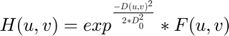
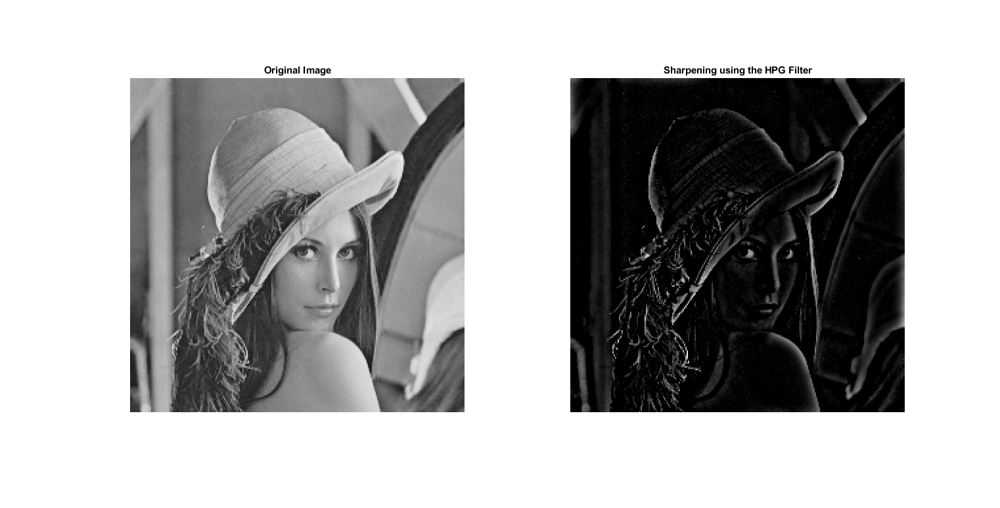

Contents
IVP Assignment 3
% Name: Chanakya Ajit Ekbote % Institute: IIT Bhubaneswar % Date: 23.10.2020 % Degree: Btech % Branch: Electronics and Communication % Roll Number: 17EC01041
Creating a new environment
clc; clear all; close all;
Image Imports
lena = imread('C:\Chanakya\Projects\ivp-assignments\Assignment-3\images\lena_gray_256.tif'); orig_fingerprint = rgb2gray(imread('C:\Chanakya\Projects\ivp-assignments\Assignment-3\images\fingerprint.jpg'));
Sharpening using the Laplacian Filter
The image can be sharpened in both the time domain and the frequency domain. In this case we convert the Laplacian to the frequency domain sharpen it and then convert it back to the time domain via the inverse dft transform. We use the following in the frequency domain:
% Calling the sharpening_with_laplacian_filter function sharpened_lena_laplacian = sharpening_with_laplacian_filter(lena); % Plotting the images figure('Name', 'Sharpening using Laplacian Filter', 'units', ... 'normalized','outerposition', [0 0 1 1]); subplot(1,2,1) imshow(lena); title('Original Image'); subplot(1,2,2) imshow((mat2gray(uint8(sharpened_lena_laplacian)))); title('Sharpening using the Laplacian Filter');
Smoothening using the Low Pass Gaussian Filter
The images can be blurred via the frequency domain via the Low Pass Gaussian Filter. The smoothened image can be obtained via the the IDFT after filteration.

% Calling the low_pass_gaussian_filter_smoothening function smoothened_lena = low_pass_gaussian_filter_smoothening(lena, 10); % Plotting the images figure('Name', 'Smoothening using LPG Filter', 'units', ... 'normalized','outerposition', [0 0 1 1]); subplot(1,2,1) imshow(lena); title('Original Image'); subplot(1,2,2) imshow((mat2gray(uint8(smoothened_lena)))); title('Smoothening using the LPG Filter');
Sharpening Using the High Pass Gaussian Filter
The images can be sharpened via the frequency domain via the High Pass Gaussian Filter. The smoothened image can be obtained via the the IDFT after filteration.
% Calling the high_pass_gaussian_filter_sharpening function sharpened_lena_hpg = high_pass_gaussian_filter_sharpening(lena, 10); % Plotting the images figure('Name', 'Sharpening using HPG Filter', 'units', ... 'normalized','outerposition', [0 0 1 1]); subplot(1,2,1) imshow(lena); title('Original Image'); subplot(1,2,2) imshow((mat2gray(uint8(sharpened_lena_hpg)))); title('Sharpening using the HPG Filter');
Removing the noise using Opening: Erosion followed by dilation
Erosion and Dilation are operations that are done for basically removing unecessary protrusions and filling in holes. Closing is used for filling in holes and then resizing the it back to the original image. Opening is used for removing protrusions and resizing the images back to the original images. The equations for opening and closing are as follows:
% Creating the structuring element struct_elem = uint8([0, 1, 0; 1, 1, 1; 0, 1, 0]); % Making the fingerprint image a binary image fingerprint = uint8(orig_fingerprint>128); % Calling the erosion and dilation function eroded_image = erosion(fingerprint, struct_elem); dilated_image = dilation(fingerprint, struct_elem); % Closing and Dilation % Erosion and Dilation and are defined opposite here. That's because the % fingerprint is black and the outer region is white. Therefore, we have to % consider the opposite. opening = dilation(uint8(erosion(fingerprint, struct_elem)), struct_elem); closing = erosion(uint8(dilation(fingerprint, struct_elem)), struct_elem); % Plotting the images figure('Name', 'Erosion and Dilation', 'units', ... 'normalized','outerposition', [0 0 1 1]); subplot(2,3,1) imshow(orig_fingerprint); title('Original Image'); subplot(2,3,2) imshow(mat2gray(fingerprint)); title('Binary Image'); subplot(2,3,3) imshow((mat2gray(uint8(eroded_image)))); title('Eroded Image'); subplot(2,3,4) imshow((mat2gray(uint8(dilated_image)))); title('Dilated Image'); subplot(2,3,5) imshow((mat2gray(uint8(closing)))); title('Closing'); subplot(2,3,6) imshow((mat2gray(uint8(opening)))); title('Opening');
Conclusion
From these experiments we can see that we can perform smoothening as well as sharpening via the frequency domain. We can observe that sometimes it is easier to process the image in the frequency domain. Moroever, we can also see that we can use operations like opening and closing to embellish the images.